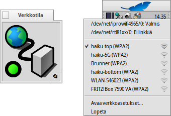

Verkkotila
Verkkotila
| Työpöytäpalkki: | ||
| Sijainti: | /boot/system/apps/NetworkStatus | |
| Asetukset: | ei mitään |
Verkkotila näyttää verkkoyhteyksiesi tilan. Jos sovelma ei ole vielä käynnissä, niin se kysyy käynnistymisen yhteydessä, että avataanko se ikkunatilassa vai Työpöytäpalkissa. Ikkunatilassa kykenet muuttamaan kuvakkeen kokoa ja käyttämään Replikantti-kahvaa raahaamaan se Työpöydälle.
Milloin se on asennettu, se t oimii hiiren kakkospainikkeen asiayhteysvalikosta.

Ensimmäinen lohko sisältää kaikkien verkkolaitteiden nimet ja niiden tilat. Sellaista riviä napsauttamalla näkyviin tulee ikkuna, joka näyttää sen IP-osoitteen, lähetys- ja verkkopeiteosoitteen.
Alla on luettelo ensimmäisen langattoman verkkoadapterin löytämistä langattomista verkoista ja signaalivoimakkuden indikaattori. Katso lisää Työpaja: Langattomat verkot siitä kuinka yhteys asetetaan.
Viimeiseksi voit valikosta vaihtaa verkkoasetuksesi tai a sovelmasta.
Tilakuvakkeet
| Valmis | Yhteys on perustettu. | ||
| Asetetaan | Yhteydenotto käynnissä. | ||
| Ei tilallista asetusta | Jotkut asetukset puuttuvat (tarkista IP-asetukset). | ||
| Ei yhteyttä | Ei ole fyysistä yhteyttä (verkkokaapeli ei ole ehkä yhdistetty tai langaton verkko ei ole käytettävissä). | ||
| - | Verkkoadaptereita ei ole käytettävissä (jos olet varma, että ainakin yksi on yhdistetty, niin luultavasti ei ole vielä ajureita). |